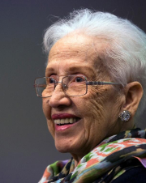
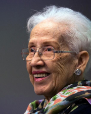

ChatWIT
Engage in a conversation with famous women in tech through our AI-powered chatbot. Ask questions about their work and challenges they faced. Choose from figures such as Ada Lovelace or Grace Hopper. Get insights and stories from women who made their mark in the tech industry.
Engage Now
 
